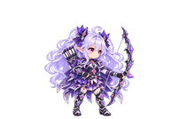
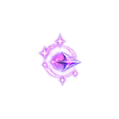
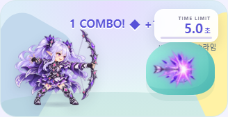

보랏빛 결정 궁수 · 전투 애니메이션
여성 궁수 전용 스킨. 공격 6프레임, 피격·쓰러짐 3프레임, 결정 화살 6프레임.
게임에서는 화살 접촉에 피해 판정이 맞춰지고 쓰러진 마지막 프레임이 유지됩니다.
공격

피격·쓰러짐
결정 화살

게임 적용 화면

스프라이트: 실제 투명 RGBA PNG · 캐릭터 셀 480×320 · 화살 셀 320×320 · 기준점 0.5, 0.975 · 검수용 프레임 간격 50px.